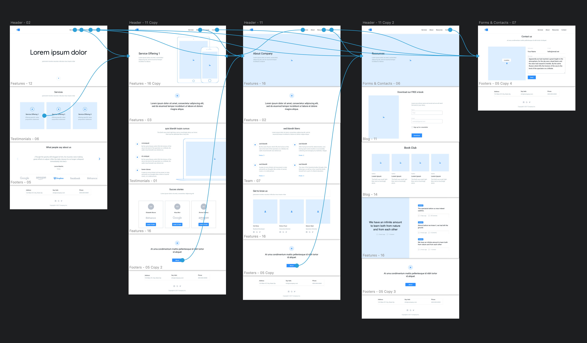
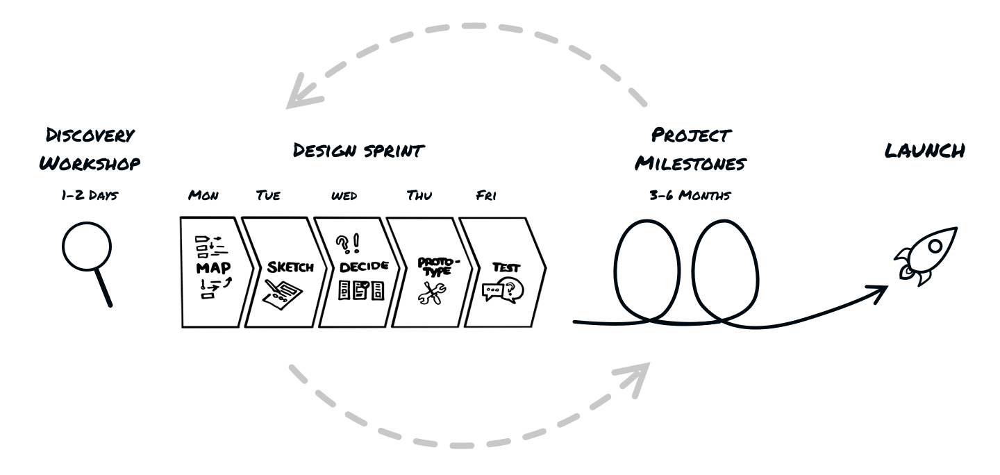
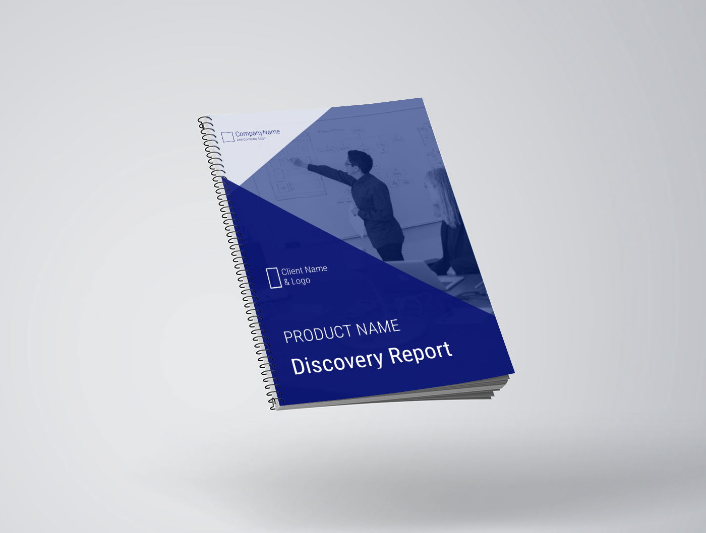
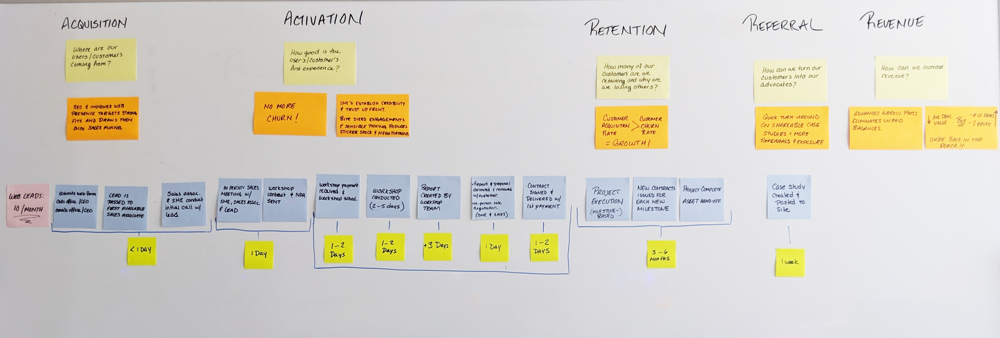

Problem
A once-thriving custom software department suddenly found itself struggling to remain viable. Customers had become scarce and unsatisfied, employee turnover rose sharply, and company leadership was at a loss for an explanation. Given that the department accounted for most of the company’s overhead, it required a steady stream of revenue to keep it afloat. If the sales drought continued for too long, the department would cease to be viable.
Discover
Understanding Current State
In order to identify where things were going wrong, I gathered all the internal stakeholders together to map out the current process on a six-foot whiteboard and broke out stages according to their corresponding Pirate Metrics. We started off by mapping out the steps in the process from a prospective client’s perspective, then layered on wait times, exit points, and common complaints from each user category.

Problem Identification
The great thing about creating a visual representation of a process is it unlocks information from people's heads, making it much easier to see problem areas and work together to address them. Through discussion and collaboration, a number of problems became extremely apparent.
Dried Up Inbound Funnel
The company had gotten its start by relying on a friend's network of referrals and by collecting leads while giving conference talks. These channels were no longer delivering viable prospects.
Based on visitor feedback, web analytics, and sales data, it was also abundantly clear that the company website was ineffective at attracting sales leads. Visitors found the site vague, confusing, and a poor example of the company’s services. Only about one or two leads came in through the site a quarter and were usually referrals, not organic searches.
Lack of Standardization
Sales
The sales and support staff repeatedly voiced conflicting opinions about the customer acquisition process and client management tools. The most frequent comment heard in the discovery phase was, “That’s not how I do it.”
Discovery Workshop
After auditing a few of the discovery workshops run by the software department, it became obvious that they were facilitated on-the-fly with no plan or structure, produced no actionable deliverables, and yielded inconsistent results. Many customers expressed displeasure that their money had not bought them a more valuable output and viewed the practice as highly unprofessional.
Not-So-Lean Practices
First, no software developers were included in the discovery workshops. When the project began, the engineers had to conduct their own form of discovery which resulted in different outcomes and estimates. Consequently, customers reported feeling taken advantage of.
Additionally, heavily staffed teams made the cost of hiring the consultancy too expensive for most client budgets. Those with limited funds struggled to get products completed with all necessary features. It was not uncommon for smaller companies to go broke and either end the project early or find themselves unable to pay their bills.
Constant Churn
It took an average of 3 or 4 exchanges to move prospects to each step in the pipeline, resulting in an average acquisition timeline of 6 to 12 months. Prospects frequently gave up and moved on to other options.
The 80/20 Rule
Company leadership strongly preferred targeting sales efforts toward corporate giants with deep pockets; referred to as “cash cows.” Unfortunately, cash cows had complicated contracting procedures that slowed down the support team. The sales staff also tended to give them huge discounts in the hopes of securing longer engagements, which tied up otherwise high-value product teams at meager rates for months. Corporate enterprises also had their own large-scale development departments and were not interested in farming out entire projects to expensive consultancies.
After analyzing the sales department’s data, we discovered the company was spending about 80% of its effort chasing cash cows that only generated about 20% of the department’s revenue. Ironically, the small “risky” startups represented about 80% of revenue, yet they were the ones who suffered the most from the department’s ineffective practices.
That’s when we decided to make startups the primary target customer for the department.
Competitor Analysis
Next it was time to see how we stacked up to the competition. In checking out successful competitors, I found that their workshops were either free or priced very low. Their customers also walked away with valuable deliverables such as high-fidelity design concepts. Their websites were simple, easy to navigate, and contained portfolios of their work.
Define
Primary Persona
We knew we needed to rethink our positioning so we started from scratch with a new user persona that represented our ideal software customer. We decided to target tech startups with a budget of at least a $250,000 budget, in the early stages of product design, and a minimal amount of internal development personnel on their founding teams.
Customer Profiles
Even though we had our primary persona, I knew we had to design a process that worked for both our external and internal stakeholders, so I built three customer profiles: Early stage Tech Startups, The Sales Team, and The Director of Software Development.
Defining the Focus
The group worked together to identify which problems might have the biggest impact to the users if solved. We hypothesized that if we improved our web presence, streamlined the sales process, repositioned the department to focus on serving the needs of startups, and increased the perceived value of their services through high-quality deliverables, the department would be able to attract and retain more customers.
Ideate
Based on our prioritized objectives, we came up with a tentative road map of incremental improvements that we believed would solve the biggest pain points.
- Iteration 1: Redesign the company website
- Iteration 2: Optimize acquisition and activation procedures
- Iteration 3: Optimize and standardize development practices
- Iteration 4: Restructure service packages and costs
Implement
Iteration 1: Revamp Company Website
I started by completely redesigning the website with straightforward messaging target toward startups, consistent page structure, visual illustrations of development practices, case studies of client work, and simplified navigation.
Iteration 2: Optimize Acquisition and Activation procedures
I cut the churn out of the acquisition stage by bringing the Director of Software Development in on the first call with sales leads to help determine project fit, demonstrate technical credibility with prospects, and provide training for the sales team on the department's services.
The VP of Sales worked with her team to establish a single pipeline management tool and instructed them to base all new contracts off of standard templates she provided.

Iteration 3: Optimize and Standardize Development Practices
I worked with the Director of Software Development and a cross-functional team to create a standardized and cost-effective engagement structure.
Discovery Workshop
They started by building a standardized workshop (with no client homework) based on Lean UX product design best practices that would result in actionable insights, delivered via an polished in-depth post-workshop report. The report also included descriptions for small, medium, and large milestone options based on the client’s budget and time constraints.
Design Sprint
Next, they added a week-long Design Sprint package that would help clients make tangible progress on their product while testing initial hypotheses.
Milestones
They switched from estimating and planning out full projects to focusing on prioritized milestones that supported the client's go-to-market strategy. This allowed clients to make progress on their products while they collected user feedback and secured additional funding.
Staffing
Then, they reduced the overhead costs of engagements by shrinking team structures down to lightweight, three-person squads of overlapping skill sets.
Finally, the Director implemented a standard that at least one member of the workshop team - if not all - would be staffed on that project long-term to maintain consistency.
Iteration 4: Restructure service packages and costs
I worked the VP of Sales and the Director of Software Development to eliminate bundled proposals. Instead, we Offered a la carte services at flat rates: Discovery Workshop, Design Sprint, and short-term development packages with weekly rates based on proposed milestones. The sales team focused initial pitches on the workshop to get clients in the door, establish credibility, and get them “invested” in the project.
Once the new service structure and pricing was set, I designed and distributed fresh sales collateral to reflect the new direction and help the sales team better communicate the department's services.
Test
As we rolled out incremental improvements, we measured their affects on our previously established Pirate Metrics and the results were staggering.
Acquisition
After the website redesign, the site bounce rate dropped by 40%, return visitors increased from 25% to 35%, and overall session duration doubled in the first month.
By implementing the company’s first-ever inbound marketing strategy, we increased our website traffic by 50% in just the first three months.
Inbound leads jumped from 1-2 phone or referral web contacts per quarter to an average of 10 organic web leads and 3 phone leads per month.
Activation
Conversions of sales qualified leads increased from 30% to 63% and reduced the overall sales cycle from 6-12 months down to an average of one month.
After six months, those who adhered to the new sales procedures were able to achieve successful deal rates of about 60-77%. Those who did not, only achieved 10%
After one year, sales metrics showed that the new workshop structure had increased conversions to engagement contracts from about 25% to 60%.
Having milestones outlined in the Discovery Report also removed the ambiguity from contracts as the sales associate could now cut and paste the chosen package directly into the agreement document. This almost eliminated contract negotiation churn.
Retention
The new workshop structure required product teams to practice problem solving skills and become more consultative with clients. As a result, 100% of customers said they saw value in the workshop and report.
Feedback from clients showed that the structured workshop exercises gave them a high degree of confidence in the product teams’ capabilities. They were also blown away when the workshop revealed how user-centered software design could inform their overall business model and product roll-out.
Estimates derived from the new workshop were highly accurate and projects consistently concluded on time and on budget.
Customers reported that they liked how the Design Sprints and milestone-based contracts allowed them to make progress on their project, while releasing demo-able outputs they could take to investors.
Referral
By switching from testimonial videos to a portfolio of case studies on the company website we were able to showcase visual examples of work in a way that captured the results and value of our services without placing a time-commitment burden on our clients.
Revenue
A la carte packages allowed the company to secure portions of the client’s overall contract earlier in the development process; alleviating cash-flow issues.
New staffing practices reduced total project costs by 83%, while increasing profit margins from 20% to 40%, and created pathways for employees to gain promotions and expand their skills.
Though the reduced pricing and shorter contracts reduced average deal value by about 75%, the frequency of won deals increased. After eight months, revenue started to turn around and the department was able to get back in the black.